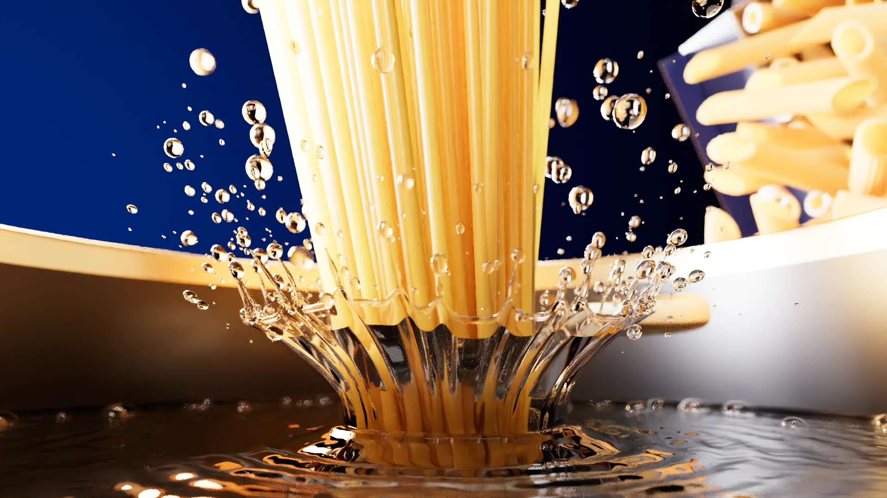
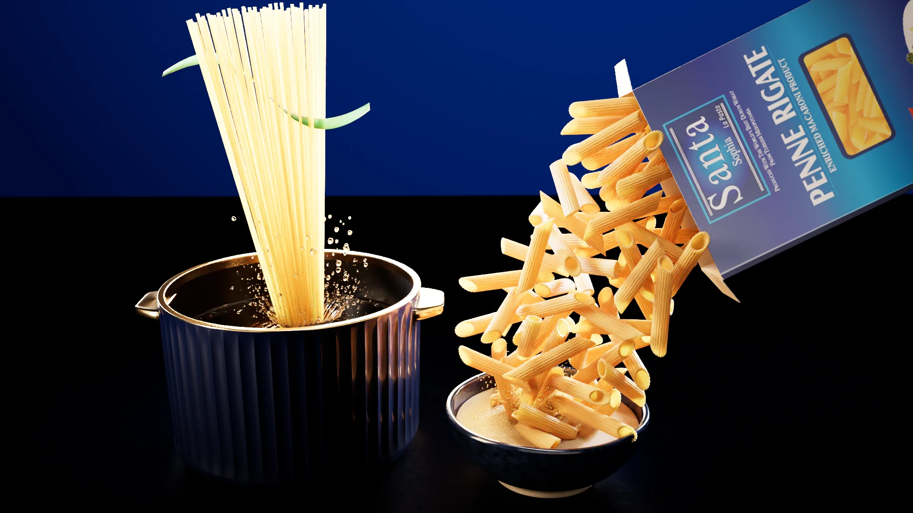
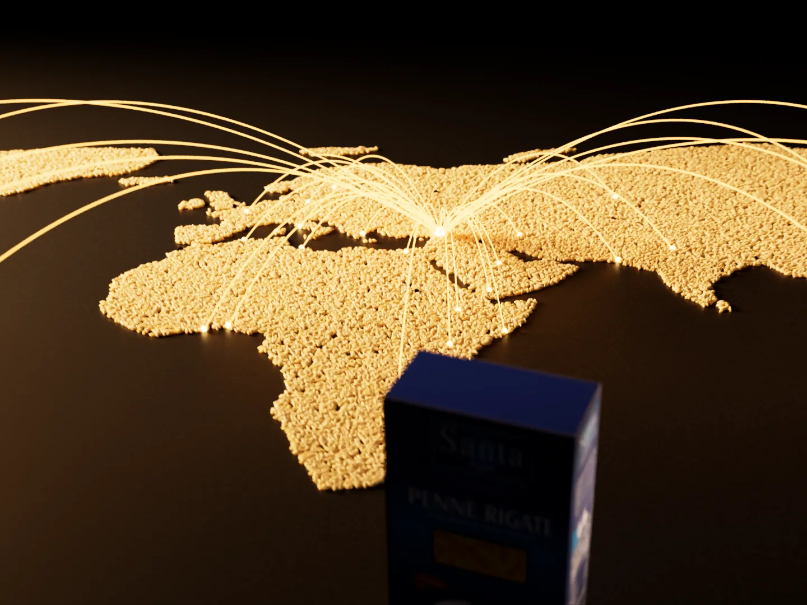

Beşler Makarna · Gaziantep
Her şey bir taneyle başlar.
Sert durum buğdayının tek bir tanesi: makarnamızın ilk adımı.
01 — İrmik
Kendi değirmenimizde irmiğe dönüşür.
İki değirmenimiz günde 700 ton buğday işler.
02 — Hamur
Su ile buluşur, hamur olur.
Durum buğdayı irmiği ve su: makarnanın bütün sırrı bu ikisinde.
03 — Şekil
Hamur şeklini bulur.
Burgu, kabuk, penne, dirsek: kısa ve uzun kesim onlarca şekil.
04 — Renk
Üç renk, tek lezzet.
Üç renkli burgumuz Santa Sophia markasıyla sofralarda.
05 — Kuruma
Sıcak havada yavaşça kurur.
Pişerken şeklini korusun, diri kalsın diye.
06 — Ambalaj
Kutusuna özenle girer.
Kutu, poşet ve toptan ambalajda; sekiz markamızla.
07 — İhracat
Gaziantep'ten 80 ülkeye.
Günde 300 ton makarna, beş kıtada sofralarda.
Beşler Makarna
Yıllardır değişmeyen kalite.
Beşler Makarna
Bir buğday tanesinden 80 ülkenin sofrasına.
Beşsan Makarna, Beşler Grup'un makarna üreticisidir. Buğdayı kendi silolarımızda saklar, kendi değirmenlerimizde irmiğe çevirir, makarnayı kendi tesisimizde üretir ve sekiz markamızla dünyaya göndeririz.
Ürünlerimiz
Dokuz ürün ailesi, tek kalite.
Kutu ve poşette makarna, lazanya, makarna peyniri, tam buğday, üç renkli, glutensiz, makarna cipsi, irmik ve un. Bir aileye dokunun, bütün ürünleri görün.
- 01Makarna8 ürün
- 02Lazanya2 ürün
- 03Makarna Peyniri2 ürün
- 04Tam Buğday4 ürün
- 05Üç Renkli2 ürün
- 06Glutensiz3 ürün
- 07Makarna Cipsi3 ürün
- 08İrmik2 ürün
- 09Un1 ürün


Kısa ve uzun kesim makarnalar; kutu, poşet ve toptan ambalaj.
Fırın için lazanya yaprakları; kutu ve toptan ambalaj.
Peynir soslu, hazırlaması kolay makarna.
Tam buğday irmiğinden makarnalar.
Üç renkli burgu; kutu, poşet ve toptan ambalaj.
Glutensiz beslenenler için burgu, sedani rigati ve arpa şehriye.
Kıtlax: makarnadan çıtır cips, üç aroma.
Kendi değirmenlerimizden durum buğdayı irmiği.
Çok amaçlı buğday unu.
Markalarımız
Sekiz marka, tek üretici.
Kendi markalarımızın yanında ithalatçılarımız için özel etiketle de üretiyoruz.
- 01
Santa Sophia
Ana ihracat markasıMakarna, lazanya, makarna peyniri, tam buğday, üç renkli, glutensiz, un.
- 02
Beşler
Grubun markasıMakarna, lazanya, makarna peyniri, irmik, un.
- 03
Kıtlax
Makarna cipsi: dört şekil, dört aroma.
- 04
Pastacity
Makarna.
- 05
Gonca
Makarna.
- 06
Donatella
Makarna.
- 07
Cinque Stelle
Makarna.
- 08
Ülfet
Makarna.
Üretim
Buğdaydan kutuya, tek çatı altında.
Beşler Grup buğdayı kendi silolarında saklar, kendi değirmenlerinde öğütür; Beşsan bu irmikten makarnayı üretir ve paketler.
- 01 — Silo
200.000ton
Buğday depolama
Grubun silolarında saklanan buğday.
- 02 — Değirmen
700ton / gün
Buğday öğütme
İki değirmen, her biri günde 350 ton.
- 03 — İrmik
490ton / gün
Durum buğdayı irmiği
Makarnanın hammaddesi, kendi değirmenimizden.
- 04 — Makarna
300ton / gün
Makarna üretimi
Kısa ve uzun makarna, lazanya, makarna cipsi.

Kalite
Belgelerimiz.
Gıda güvenliği, kalite, çevre ve iş güvenliği belgelerimiz. Bir belgeyi açmak için üzerine dokunun.
İhracat
80 ülkeye makarna gönderiyoruz.
İthalatçılar, toptancılar ve market zincirleri için kendi markalarımızla ya da özel etiketle üretim. Ürünleri seçin, miktarı yazın; teklifimizi e-postayla gönderelim.
- Telefon+90 342 337 17 77
- TesisGaziantep 1. Organize Sanayi Bölgesi
